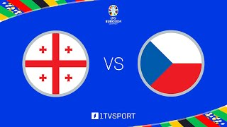
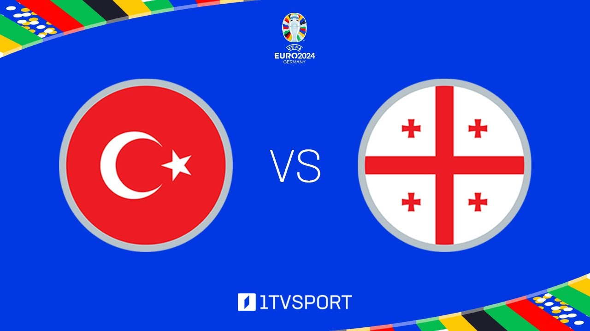
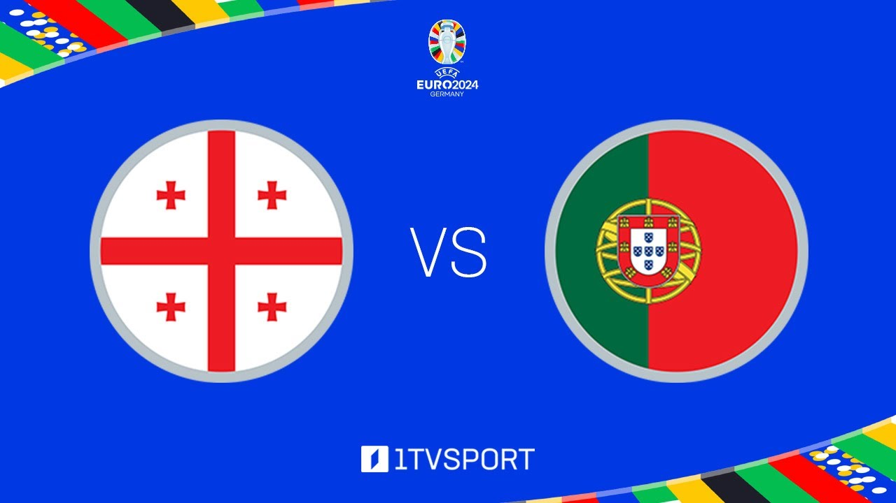

საქართველო ჩეხეთი
ევროპის ჩემპიონატზე საქართველო-ჩეხეთის
ნაკრებებს შორის მატჩი ფრედ, 1:1 დასრულდა.
შესაბამისად, საქართველოს ნაკრებმა ჩემპიონატზე
პირველი ქულა მოიპოვა.
მატჩის პირველი გოლი
საქართველოს ნაკრების ფეხბურთელმა,
გიორგი მიქაუტაძემ
45-ე წუთზე 11- მეტრიანით გაიტანა.
ჩეხებმა ანგარიშის
გათანაბრება მატჩის მეორე ნახევარში
შეძლეს.
შეხვედრა ჰამბურგში,
„ვოლკსპარკშტადიონზე“ მიმდინარეობდა.
26 ივნისს საქართველოს
ნაკრები გელზენკირხენში,
პორტუგალიის ეროვნულ ნაკრებს
დაუპირისპირდება.
კითხვის
გაგრძელება...

საქართველო თურქეტი
საქართველო თურქეტი საქართველოს ნაკრები ევროპის
ჩემპიონატზე პირველ თამაშს დორტმუნდში, თურქეთის
ნაკრების წინააღმდეგ 18 ივნისს ჩაატარებს.
22 ივნისს საქართველოს ნაკრები ჰამბურგში ჩეხეთს
დაუპირისპირდება, ხოლო 26 ივნისს, გელზენკირხენში,
პორტუგალიის ეროვნულ ნაკრებს.
გერმანიაში ევროპის ჩემპიონატი 14 ივნისს დაიწყება და 14
ივლისს დასრულდება.
ისტორიაში პირველად, საქართველოს ეროვნული
საფეხბურთო ნაკრები ევროპის ჩემპიონატზე ითამაშებს.
საქართველოს ნაკრებმა ევრო 2024-ის საკვალიფიკაციო ეტაპის
ფინალურ შეხვედრაში საბერძნეთის ეროვნულ ნაკრებს სძლია.
ანგარიშის ბედი პენალტების სერიაში გადაწყდა და
საქართველოს სასარგებლოდ – 4:2 დასრულდა
კითხვის
გაგრძელება...

საქართველო პორტუგალია
ევროპის ჩემპიონატზე პირველი მატჩი
საქართველოს ნაკრებმა 18 ივნისს, თურქეთთან
გამართა და 1:3 დამარცხდა, ხოლო 22 ივნისს ჩეხეთის
ნაკრებთან შეხვედრა ფრედ, 1:1 დაასრულა და ევროპის ჩემპიონატზე
პირველი ქულა მოიპოვა. 26 ივნისს კი, საქართველოს ნაკრებმა ჯგუფური
ეტაპის მესამე მატჩში პორტუგალია 2:0 დაამარცხა და თავის პირველ
ევროპის ჩემპიონატზე პლეი-ოფში გავიდა.
კითხვის
გაგრძელება...